操作系统原理 · 第 5 章 资源分配与调度
5.2 资源的分配机制和策略
上一节说明了资源管理要做哪四件事，这一节进入前两件——资源用什么数据结构来描述，以及按什么策略把资源分出去。前半部分讲分配机制，即资源描述器与资源信息块；后半部分讲分配策略，先给出「先请求先服务」与「优先调度」两条通用原则，再以磁盘为例讲针对设备特性的调度，也就是寻道时间的优化。
1. 资源分配机制
（1）资源描述器
要把资源分配出去，首先得把资源本身表示成数据结构。描述各类资源最小分配单位的数据结构称为资源描述器 rd（resource descriptor）。这里的关键词是「最小分配单位」：不同的资源，最小分配单位并不相同——磁盘的最小分配单位是磁盘面中的一个扇区；文件系统以一个文件为分配单位；主存储器以页为分配单位。
资源描述器中要记录的信息，可以理解成「关于这个最小分配单位，系统需要知道的一切」：
- 资源名、资源类型；
- 最小分配单位的大小、最小分配单位的地址；
- 分配标志、描述器链接信息；
- 存取权限、密级；
- 最后一次存取时间、记账信息；
- 其他信息。
前几项用于定位和分配，中间几项用于把同类资源的描述器串成队列，后面几项用于安全保护与计费，它们与上一节「资源管理的任务」中提到的四件事正好一一对应。
（2）资源信息块
资源描述器管的是「一个最小分配单位」，而资源信息块管的是「一类资源」。资源信息块是描述某类资源的请求者、可用资源以及该类资源分配程序等必要信息的数据结构。它由三部分组成：
- 请求者队列：由等待队列头指针引导，队列中的元素是需要该类资源而暂时得不到的进程，即各个 PCB；
- 可利用资源队列：由可利用资源队列头指针引导，队列中的元素是当前空闲的资源描述器 rd；
- 资源分配程序：由资源分配程序入口地址指出，被调用时负责从可利用资源队列中取出资源、分配给请求者队列中的进程。
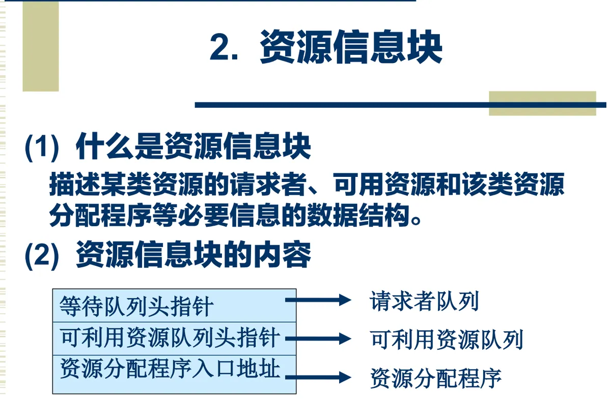
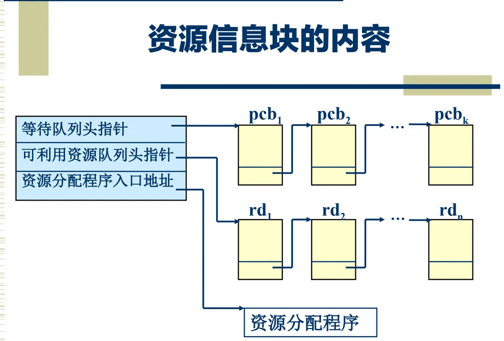
把资源信息块具体到处理机，就是中央处理机资源信息块 cpu-rib：它的请求者队列是就绪队列（由 ready-q-start 引导，挂着 pcb1…pcbk），可用资源信息记录着处理机是否空闲，资源分配程序的入口地址 scheduler-addr 指向进程调度程序。也就是说，第 6 章要讲的进程调度，本质上就是「处理机」这类资源的资源分配程序在运行。
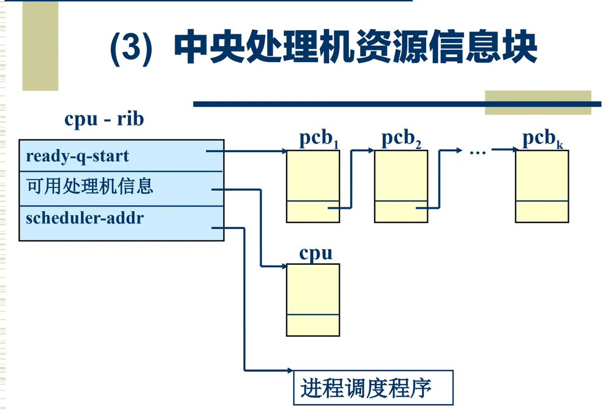
2. 资源分配策略
有了数据结构，还要有从队列中挑人的规则。通用的分配策略有两条。
（1）先请求先服务 FIFO
先请求先服务 FIFO（First In First Out）的排序原则是：按请求的先后次序排序。每一个新产生的请求均排在队尾；当资源可用时，资源分配程序从队列中选取第一个请求，并满足其需要。队列按自然顺序排列，公平、简单，缺点是先到的请求即使很费时也要先做，后面短小的请求只能陪着等。
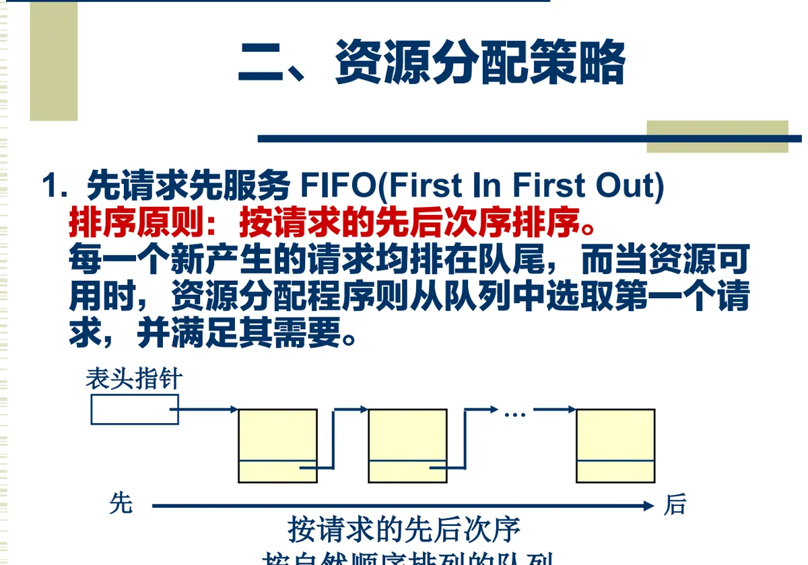
（2）优先调度
在优先调度策略下，为每一个进程指定一个优先级，优先级反映进程要求处理的紧迫程度。排序原则变成：按优先级的高低排序。每一个新产生的请求，按其优先级的高低插到队列中相应的位置上；当资源可用时，仍然选取队列中的第一个请求并满足其需要。可以看出两种策略的差别只在「插到哪儿」这一点上，其余完全相同。
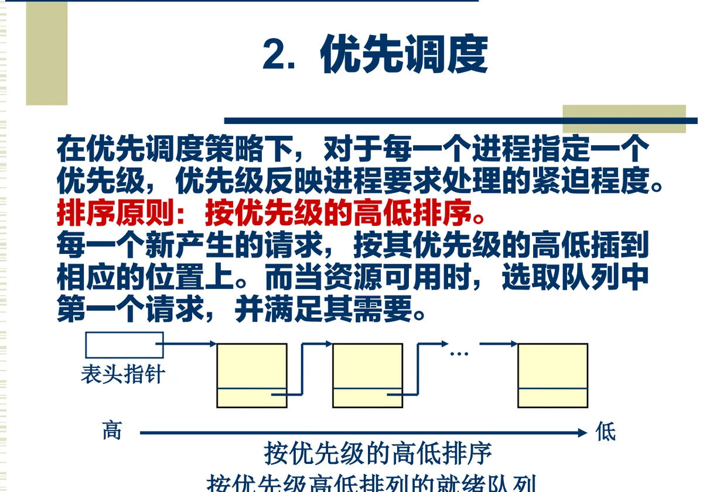
3. 针对设备特性的调度
（1）磁盘的物理组织与访问时间
对有些设备，光考虑「谁先来」或「谁更急」还不够，还得考虑设备本身怎么动才省时间，最典型的就是磁盘。磁盘的物理结构可以自外向内分为若干层：磁头 head（对应盘面）→ 柱面 cylinder → 磁道 track → 扇区 sector。各盘面上位置相同的磁道构成一个柱面；读写数据时，磁头要先移到指定柱面（即指定磁道），再等所需的扇区转到磁头下面。
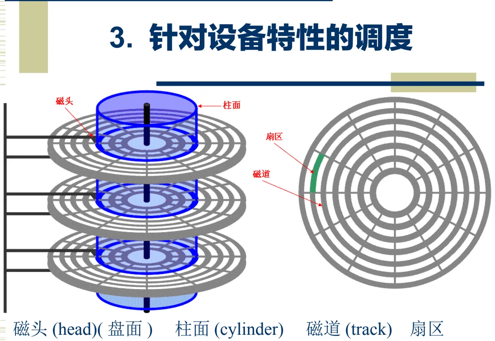
由此，磁盘访问时间由两段构成，它们分别对应上面两个动作：
- 寻道时间 Ts：把磁臂（磁头）移动到指定磁道上所经历的时间。它是启动磁臂的时间 s 与磁头移动 n 条磁道所花费的时间之和，即 Ts = m × n + s。其中 m 是一常数，与磁盘驱动器的速度有关：对一般磁盘 m = 0.2，对高速磁盘 m ≤ 0.1，磁臂的启动时间约为 2 ms；
- 旋转延迟时间 Tτ：指定扇区移动到磁头下面所经历的时间。对于硬盘，典型的旋转速度大多为 5400 r/min，每转需时 11.1 ms，平均旋转延迟时间 Tτ 为 5.55 ms。
寻道时间与磁头移动的距离成正比，因此「先做哪个请求」会直接改变总的寻道时间——这就是移臂调度要优化的问题。而扇区转到磁头下面需要多久，与请求的先后次序关系不大，对应的优化叫旋转调度。
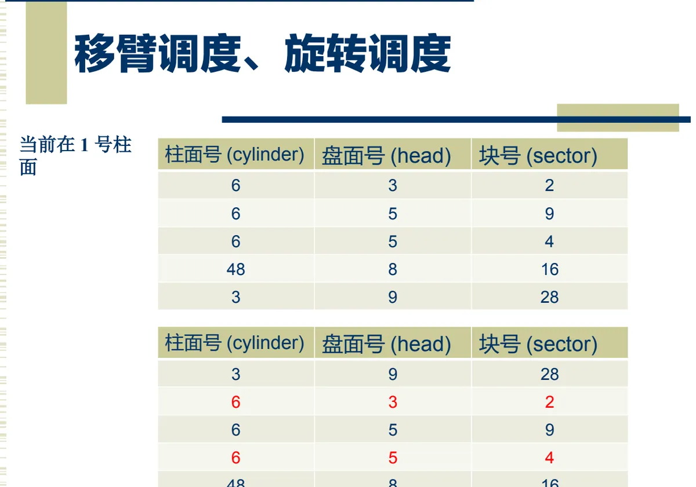
（2）四种移臂调度算法
先来先服务 FCFS：按进程请求访问磁盘的先后次序进行调度。特点是简单、较合理，但未对寻道进行优化。课件给出的例子是：请求序列 98, 183, 37, 122, 14, 124, 65, 67，磁头当前位置在 53，此时磁头只能按请求到达的顺序依次往返，寻道距离很长。
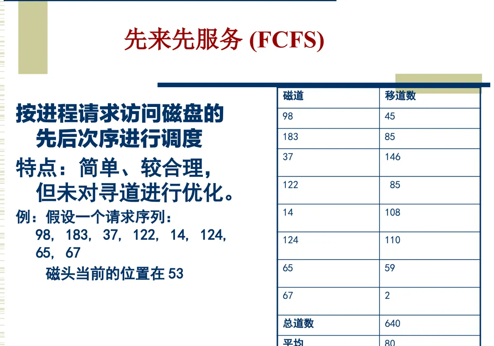
最短寻道时间优先 SSTF：选择从当前磁头位置所需寻道时间最短的请求。特点是寻道性能比 FCFS 好，但不能保证寻道时间最短，且有可能引起某些请求的「饥饿」——如果不断有新到的请求落在磁头附近，远处的请求就一直轮不到。
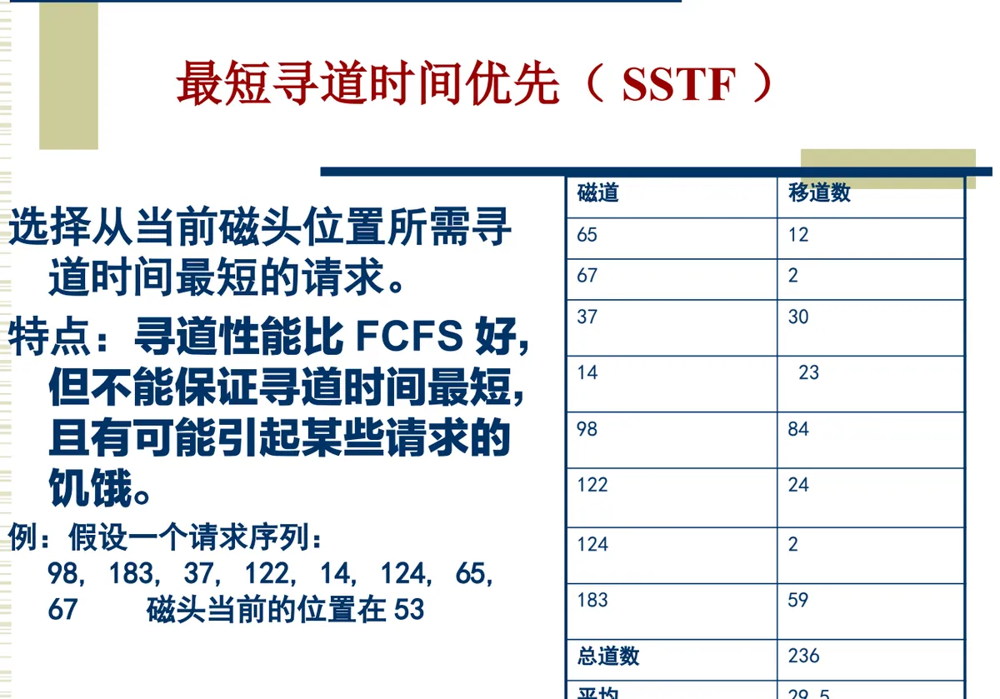
扫描算法 SCAN：磁头从磁盘的一端开始向另一端移动，沿途响应访问请求，直到到达了磁盘的另一端，此时磁头反向移动并继续响应服务请求，所以它有时也称为电梯算法。特点是寻道性能较好，避免了饥饿，但不利于远离磁头一端的访问请求——刚被扫过的那一端要等磁头跑完一个来回。
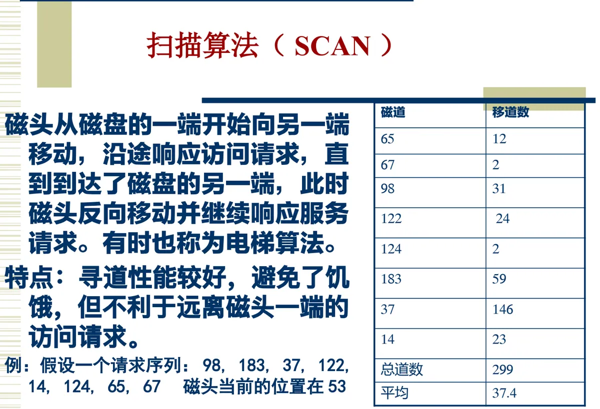
循环扫描算法 CSCAN：在扫描算法的基础上规定磁头只能单向移动。磁头移到最外的被访问磁道时，立即返回到最里的欲访问磁道。这样，各磁道的等待时间比较均匀，代价是返回途中不做任何服务。
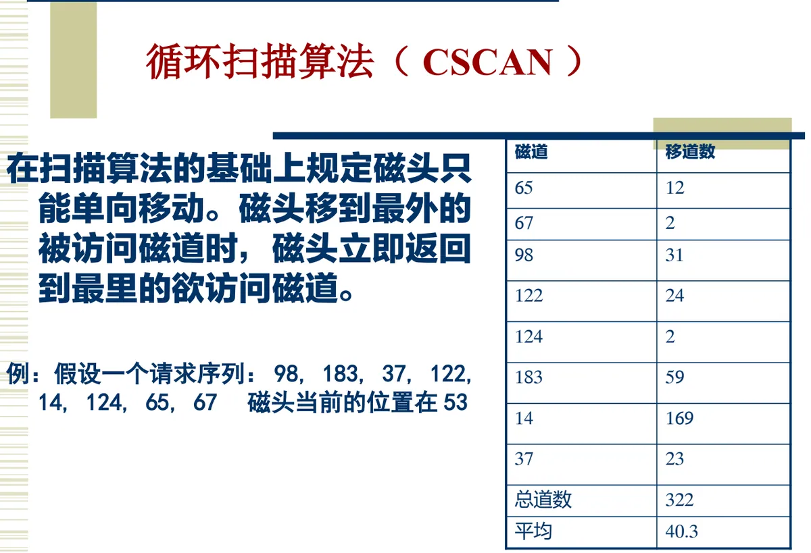
4. 课件留下的练习
这一节的末尾，课件给出了四道练习，其中第一道附带了解答提示，值得记下来：
- 什么是虚拟资源？对主存储器而言，用户使用的虚拟资源是什么？虚拟资源是用户使用的逻辑资源，是经过操作系统改造的、使用方便的虚资源，而不是物理的、实际的资源；对主存储器而言，用户使用的虚拟资源就是虚拟存储器，即逻辑地址空间——用户用逻辑地址编程，操作系统和硬件为用户实现逻辑地址到物理地址的映射（这部分内容在第 7 章主存管理中展开）；
- 常用的资源分配策略有哪两种？资源请求队列的排序原则是什么？即先请求先服务（按请求的先后次序排序）与优先调度（按优先级的高低排序）；
- 另两道练习围绕移臂调度、旋转调度以及两种移臂调度算法展开，与本节的第 3 部分对应。
本节小结
- 资源分配机制由两个层次的数据结构组成：资源描述器 rd 描述一个最小分配单位（含资源名、类型、大小、地址、分配标志、链接信息、权限、密级、存取时间、记账信息等），资源信息块描述一类资源；
- 资源信息块的三要素是请求者队列（等待队列头指针）、可利用资源队列（及头指针）和资源分配程序（入口地址）；cpu-rib 是它在处理机上的实例，其中的分配程序就是进程调度程序；
- 通用分配策略有两种：先请求先服务（按请求先后次序排序，新请求排队尾）与优先调度（按优先级高低排序，新请求按优先级插入），两者都是「资源可用时取队首请求」；
- 对磁盘这类设备还要考虑设备特性：访问时间＝寻道时间 Ts（Ts = m×n + s，与移动磁道数成正比）＋旋转延迟时间 Tτ（5400 r/min 时平均 5.55 ms），分别对应移臂调度与旋转调度；
- 四种移臂调度算法：FCFS（简单但不优化寻道）、SSTF（寻道性能好但可能饥饿）、SCAN/电梯算法（避免饥饿，对远离磁头一端不利）、CSCAN（单向移动，等待时间均匀）。